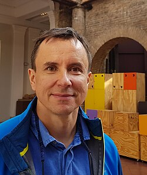

Andrei Okounkov | |
|---|---|
| Андрей Окуньков | |
 | |
| Born | Andrei Yuryevich Okounkov July 26, 1969 |
| Alma mater | Moscow State University (BS, PhD) |
| Awards | EMS Prize (2004) Fields Medal (2006) Nemmers Prize in Mathematics (2026) |
| Scientific career | |
| Fields | Mathematics |
| Institutions | Columbia University National Research University – Higher School of Economics Princeton University University of California, Berkeley University of Chicago |
| Alexandre Kirillov | |
Andrei Yuryevich Okounkov (Russian: Андре́й Ю́рьевич Окунько́в, Andrej Okun'kov, born July 26, 1969) is a Russian mathematician who works on representation theory and its applications to algebraic geometry, mathematical physics, probability theory and special functions. He is currently a professor at Columbia University and the academic supervisor of HSE International Laboratory of Representation Theory and Mathematical Physics.[1] In 2006, he received the Fields Medal "for his contributions to bridging probability, representation theory and algebraic geometry."[2]
He graduated with a B.S. in mathematics, summa cum laude, from Moscow State University in 1993 and received his doctorate, also at Moscow State, in 1995 under Alexandre Kirillov and Grigori Olshanski.[3] He is a professor at Columbia University. He previously was a professor at Princeton University, where he was awarded a Packard Fellowship (2001), the European Mathematical Society Prize (2004), and the Fields Medal (2006); an assistant and associate professor at Berkeley, where he was awarded a Sloan Research Fellowship; and an instructor at the University of Chicago. He was going to rejoin the faculty at Berkeley in the summer of 2022, but decided to stay at Columbia, teaching a graduate class in the fall of 2023.
He has worked on the representation theory of infinite symmetric groups, the statistics of plane partitions, and the quantum cohomology of the Hilbert scheme of points in the complex plane. Much of his work on Hilbert schemes was joint with Rahul Pandharipande.
Okounkov, along with Pandharipande, Nikita Nekrasov, and Davesh Maulik, has formulated well-known conjectures relating the Gromov–Witten invariants and Donaldson–Thomas invariants of threefolds.
In 2006, at the 25th International Congress of Mathematicians in Madrid, Spain, he received the Fields Medal "for his contributions to bridging probability, representation theory and algebraic geometry."[2] In 2016, he became a fellow of the American Academy of Arts and Sciences.[4] In 2026 he was awarded the Nemmers Prize in Mathematics.[5]
{kind=link}